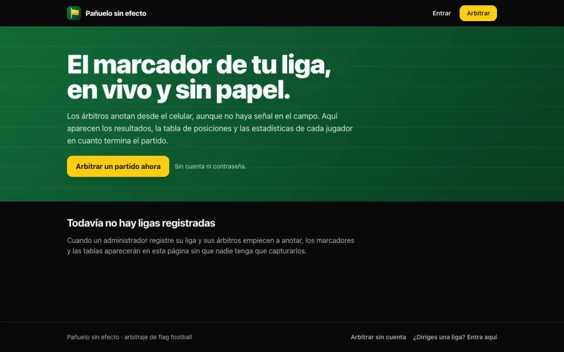

En producción · PWA offline-first
Pañuelo sin efecto
Arbitraje y gestión de ligas de flag football. El árbitro anota desde el celular aunque no haya señal en el campo: las jugadas se guardan en IndexedDB y se sincronizan al volver la conexión. El marcador no se edita, se reconstruye a partir de eventos inmutables, así que cada partido queda auditable. Incluye panel para dueños de liga y modo de arbitraje sin cuenta.
Ver demo